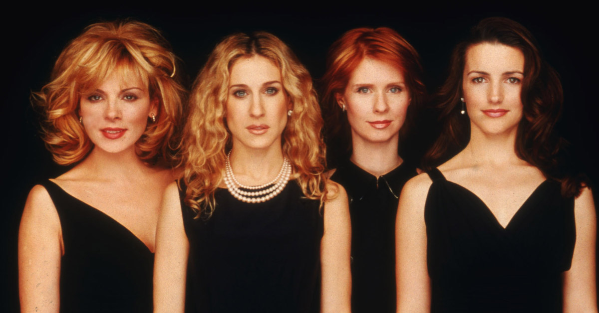

Explorando a Iconografia Urbana e Feminina de "Sex and the City"
Desde sua estreia em 1998, "Sex and the City" cativou audiências em todo o mundo com suas histórias ousadas sobre amor, amizade e autodescoberta na cidade de Nova York. A série, criada por Darren Star e baseada no livro de Candace Bushnell, rapidamente se tornou um fenômeno cultural, influenciando não apenas a moda e a cultura pop, mas também a maneira como as mulheres são retratadas na televisão.
Uma Nova Narrativa Feminina
"Sex and the City" foi pioneira ao apresentar quatro mulheres independentes e sexualmente francas como protagonistas, que desafiaram as convenções tradicionais de como as mulheres deveriam se comportar na televisão. Carrie Bradshaw (interpretada por Sarah Jessica Parker), Samantha Jones (interpretada por Kim Cattrall), Charlotte York (interpretada por Kristin Davis) e Miranda Hobbes (interpretada por Cynthia Nixon) não tinham medo de explorar sua sexualidade, carreiras e relacionamentos de maneira aberta e sem remorsos.
A série quebrou tabus ao abordar temas como sexo casual, infidelidade, maternidade e carreira de maneira franca e realista. Ao fazê-lo, "Sex and the City" proporcionou uma narrativa feminina autêntica e multifacetada que ressoou com mulheres de todas as idades.

Candance Bushnell
Candace Bushnell, nascida em 1º de dezembro de 1958 em Glastonbury, Connecticut, é uma escritora renomada conhecida por suas obras que exploram os intricados relacionamentos, a vida urbana e a cultura contemporânea. Seu livro "Sex and the City", uma coletânea de colunas originalmente escritas para o "New York Observer", serviu de base para a série de televisão homônima criada por Darren Star, que se tornou um fenômeno cultural nos anos 90. A série catapultou Bushnell para o sucesso e solidificou seu lugar como uma voz distinta na literatura contemporânea, explorando francamente temas como amor, sexo e vida na cidade grande em seus diversos romances e obras de não ficção.
Legado e Impacto Cultural
Mesmo após seu término em 2004, "Sex and the City" continua a influenciar a cultura pop e o discurso público sobre feminismo, sexualidade e amizade. O sucesso da série gerou dois filmes de sucesso e uma série derivada, "The Carrie Diaries", bem como uma base de fãs dedicada e apaixonada que continua a celebrar e relembrar as aventuras das quatro amigas em Nova York.
Além disso, "Sex and the City" abriu portas para uma nova era de narrativas femininas na televisão, inspirando uma série de programas subsequentes que colocam as mulheres no centro das histórias. Seu legado como uma das séries mais revolucionárias e culturalmente significativas da televisão é inegável e continuará a ser lembrado e apreciado por muitas gerações.
Em suma, "Sex and the City" transcendeu as fronteiras da televisão para se tornar um ícone cultural duradouro, celebrado por sua representação autêntica de mulheres independentes e sua vividamente retratada cidade de Nova York. Seu impacto continua a ressoar, inspirando e capacitando mulheres em todo o mundo a viverem suas vidas com paixão, coragem e estilo.